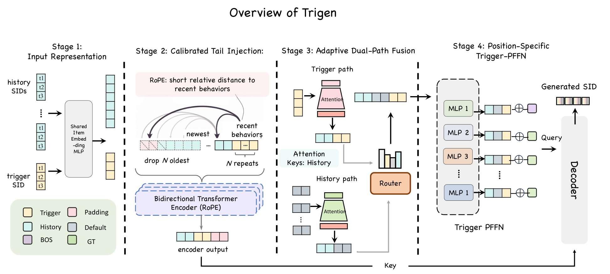
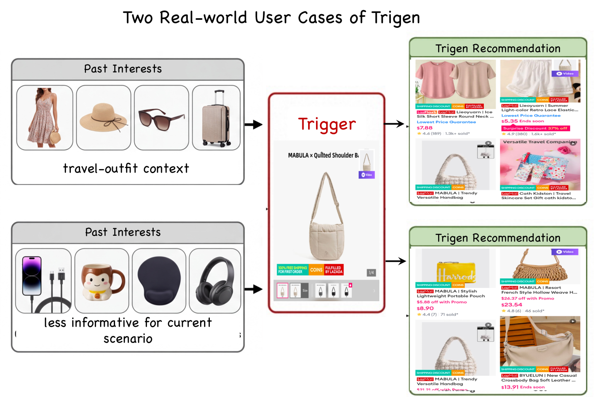
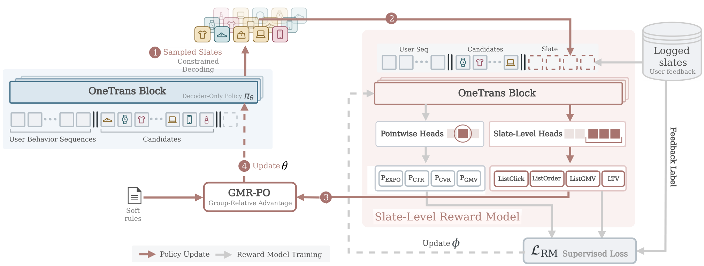
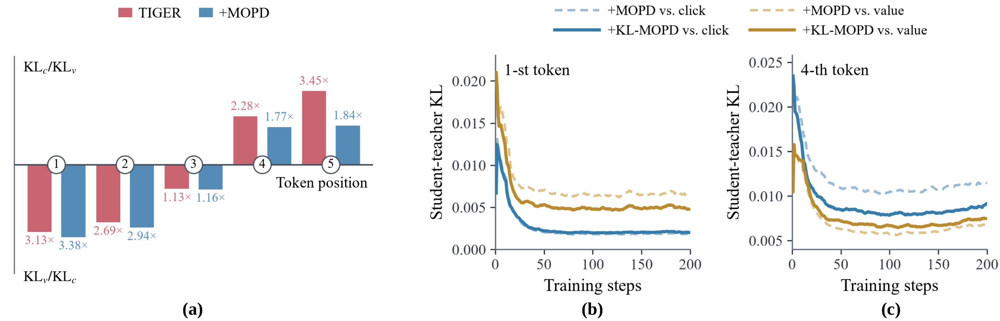

同样点了一只单肩包，为什么一个人看到夏装、另一个人满屏是包？TriGen 让生成式推荐跟着「刚点的那一下」走你在购物 App 首页刷到一块手表，点进去。详情页下面马上出现一个新的信息流：手表、表带、运动手环。这个信息流是围绕你刚点的那块表排的，表本身被钉在最上面。
论文把这种场景叫 Trigger-Induced Recommendation（TIR，由一次点击触发的推荐），被点的那件商品叫 trigger。难点在于，推荐既要跟着 trigger 走，又不能把用户的长期喜好全扔掉。论文里有两个真实用户点了同一只绗缝单肩包：一个人之前在看连衣裙、遮阳帽、墨镜和行李箱，另一个人之前在看手机充电线、杯子、鼠标垫和耳机。合理的推荐结果显然不该一样。
这篇论文来自阿里巴巴国际数字商业集团和南开大学，做的是把生成式推荐用到 TIR 上。生成式推荐把每件商品编成一串离散 token（Semantic ID，SID），模型根据用户历史一位一位生成下一件商品的 SID。现有的生成式推荐默认下一件商品是历史的延续，没有专门接入 trigger 的位置。已有的 TIR 方法，比如 DIHN（估计用户此刻有多想要 trigger 这类东西）和 DIAN（判断这次进来是冲着 trigger 还是出于习惯），是给 CTR 打分设计的，只输出一个分数，没法逐个 token 地引导生成。TriGen 在三个地方接入 trigger：编码时把它复制几份接在历史末尾；拿它当 query、再拿一组默认 query，各从历史里取一路条件，由门控按请求逐位加权；解码时每一位用自己的小网络把条件变换后加进去。在一个大型电商的工业数据上，它的 Recall@10 从最强简单基线的 12.15 升到 15.50；东南亚六国线上 A/B，收入提升 3.27%，GMV 提升 0.90%，已经全量。
trigger 要在编码、条件融合和每一步解码里都参与生成，并按请求决定它和历史各占多少；公开数据集没有真实 trigger，这一点主要靠工业数据和线上实验支撑。

把 trigger 塞进去，最简单的做法差在哪
最直接的办法是把 trigger 当成历史里最新的一条行为，接在序列末尾。论文把它作为基线，叫 GR + trigger append，它也是线上 A/B 里的对照组。另一个办法是把 trigger 投影一下，在每一步解码时统一加到输入上（GR + trigger conditioning）。
作者认为这些做法卡在三处。第一，历史很长时，末尾一个 trigger token 在自注意力里很容易被一长串历史冲淡。第二，有的点击只是随手看看，应该更听历史的；有的点击是真的转向了新兴趣，应该更听 trigger。一个固定的融合比例照顾不了两种情况。第三，SID 是一位一位生成的，前几位大致对应粗的类别，后几位对应更细的差别。只在第一步加一次条件，越往后影响越弱；每一位都加同一个信号，又照顾不到各位的分工。
TriGen 的三个部件分别对着这三处。
TriGen 怎么接入 trigger
第一个部件叫 Calibrated Tail Injection。编码器看的历史窗口长度固定，比如 M 条。TriGen 丢掉最老的 N 条，在末尾接上 N 份 trigger。trigger 挨着最近的几条行为，配合 RoPE（一种按相对距离编码位置的方法），它和最近行为之间的注意力更容易建立。N 越大，trigger 在注意力里占的份额越大。工业数据上 N 取 3。
第二个部件叫 Adaptive Dual-Path Fusion。它不用编码器已经混进 trigger 的输出，回到原始历史上重新取两路条件。trigger 路拿 trigger 当 query 去注意历史，挑出和这次点击相关的行为。历史路拿一组可学习的默认 query 去注意历史，总结用户平时的喜好，跟 trigger 无关。两路都是每个 SID 位置各算一个向量。
然后一个门控网络看两路的整体情况，给每一位算一个 0 到 1 之间的权重 w。这一位的条件 = w × trigger 路 +（1 − w）× 历史路。w 按请求算，所以随手一点和真心转向可以拿到不同的比例。
第三个部件叫 Position-Specific Trigger-PFFN。每个 SID 位置有一个自己的 MLP，把这一位的条件变换一下，加到解码器这一步的输入上。解码第一步的输入是起始符的 embedding 加第 1 位的条件，第二步是刚生成的第 1 个 token 的 embedding 加第 2 位的条件，以此类推。trigger 的影响就这样跟到最后一位。

走一遍：同一只包，两个用户
下面用论文图 5 的两个真实用户。历史、trigger 和最终推荐来自论文；注意力权重和门控权重是示意。
第一步，接入 trigger。两个用户都点了那只绗缝单肩包。编码器把各自历史里最老的 3 条挤出窗口，在末尾接上 3 份单肩包。编码器的输出里因此带着这只包的信息，解码器每一步都会通过交叉注意力读它。
第二步，trigger 路给历史打权重。trigger 路拿单肩包当 query，在原始历史上算注意力，输出是历史行为的加权和，里面没有单肩包本身。用户甲的历史是连衣裙、遮阳帽、墨镜、行李箱，示意权重是 0.4、0.3、0.2、0.1，重点落在行李箱和连衣裙这类出行用品上。用户乙的历史是手机和充电线、杯子、鼠标垫、耳机，没有一件和包相关，权重大致平分，每条 0.25。
第三步，门控定比例。历史路不看 trigger，用默认 query 总结平时的喜好。对乙来说，trigger 路的结果约等于四条历史的平均，和历史路相差不大，所以不管门控给 0.3 还是 0.8，合出来的条件都还是「数码桌面」。对甲来说，两路有差别：trigger 路偏向出行用品，门控设为 0.5（示意）时，条件 = 0.5 × trigger 路 + 0.5 × 历史路，一半来自和包相关的出行用品。
第四步，逐位加到解码器。工业数据上的 SID 有 8 位，每一位有自己的 MLP。第 1 位的条件经 MLP_1 变换后，和起始符的 embedding 相加，决定商品的大致方向。后面每一位再加上自己那一份条件，往细处收。同时，解码器每一步都在读带着 3 份单肩包的编码器输出。
第五步，看结果。论文里，用户甲拿到的是夏季上衣、蕾丝短裤、一个靠近 trigger 的手提包和一套旅行护肤品。用户乙的四个位置全是包：小收纳袋、编织度假包、手提包、斜挎包，变的是款式和材质。
作者的解读是，历史能撑住这次点击时，trigger 被放进更大的场景里理解；历史撑不住时，模型更多地依赖 trigger。按上面的走法，乙的两路条件都只能从数码用品里取信息，单肩包本身主要经编码器进入生成。作者的解读停留在案例层面。

实验结果
工业数据来自一个大型电商平台的真实 TIR 场景，约 4,928 万用户、1.59 亿件商品、14.9 亿条样本。公开数据用 Amazon 的 Industrial_and_Scientific 类目，它没有 trigger 字段，作者把每个用户历史里最后一条当作 trigger。
工业数据上，TriGen 的 R@10 是 15.50。只靠历史的生成式方法 TIGER 是 7.53，判别式 TIR 方法里最好的 DEI2N（在 DIHN 的思路上加了时间信息）是 7.20，简单接 trigger 的 GR + trigger append 是 12.15。这说明把 trigger 接进生成式推荐本身就很值钱，最简单的接法已经比 TIGER 高出 4.62；TriGen 的三个部件在此之上又多了 3.35。
公开数据上差距小得多。TriGen 的 R@10 是 13.22，GR + trigger append 是 13.26，略高一点；R@5 和两个 NDCG 是 TriGen 最好。作者指出，公开集的 trigger 只是最后一条历史，不是真的点击，信号比线上弱，所以公开集上的结果只能说明这么多。
消融都在工业数据上做：
| 版本 | R@10 | N@10 |
|---|---|---|
| TriGen 完整版 | 15.50 | 7.33 |
| 去掉 Dual-Path（把原始 trigger 直接送进各位 MLP） | 14.51 | 6.34 |
| 去掉 Trigger-PFFN（解码器不再有 trigger 条件） | 11.10 | 5.31 |
| 去掉 Tail Injection（编码器里没有 trigger） | 11.04 | 5.19 |
| 两路简单平均，不用门控 | 11.87 | 5.47 |
| 只在起始符处加条件 | 12.93 | 5.99 |
| 各位共用一个投影层 | 13.85 | 6.51 |
| 完全不用 trigger | 8.27 | 3.81 |
（数字来自论文表 2 和表 3）
拿掉编码器里的 trigger 或解码器里的条件，R@10 都掉到 11 左右。两路简单平均比完整版低了 3.6 个点，说明按请求定比例这件事本身很重要。只在起始符加条件、各位共用投影层，也都比逐位各用一个 MLP 差。
trigger 复制几份也有讲究。作者在工业数据上试了 1 到 5 份，所有指标先升后降，3 份最好。不重复（只放 1 份）时 R@10 是 14.83。
线上效果
线上实验放在印尼、马来西亚、新加坡、菲律宾、泰国、越南六个市场的商品详情页 trigger 信息流里，从 2026 年 6 月 28 日跑到 7 月 2 日。实验组和对照组各拿 10% 流量。对照组是线上正在用的 GR + trigger append，上游候选和下游服务完全一致，所以两组只差在是否换成 TriGen。
六个市场的收入都涨了，幅度在 1.64% 到 8.16% 之间。GMV 六个里涨了四个，最高 20.54%，说明各市场之间波动不小。按流量加权，收入提升 3.27%，GMV 提升 0.90%。新增的只有几个轻量的注意力、一个门控和几个小 MLP，线上延迟约 10.5 ms，和对照组几乎一样。7 月起全量。
这对做推荐的人意味着什么
如果你的推荐页是被一次点击打开的，trigger 值得在生成的每一步都出现，并且让模型自己决定这一次该听它多少。
可以先对照「接在末尾一次」和「每一步都加」：TriGen 的消融里，其他部件都保留、只拿掉解码器里的 trigger 条件，R@10 就从 15.50 掉到 11.10。如果线上只是把 trigger 当最新一条历史，这一步就有提升空间。
门控是第二个值得试的地方。门控本身只是一个线性层加 sigmoid，而简单平均和门控之间差了 3.6 个点。做这类改动时，可以像论文图 5 那样挑同一个 trigger、历史差别很大的用户，直接看生成结果有没有分开。
局限
公开数据集的 trigger 是模拟的，取的是最后一条历史，那里 TriGen 和简单的 append 基线几乎打平。主要证据来自不公开的工业数据和线上实验。
门控的作用由图 5 的案例和「简单平均」消融支撑，门控在不同请求上实际怎么分配，还要看自己的数据。TriGen 也只处理一个 trigger；同时有几个近期信号的页面，论文留给了后续工作。
读完这篇，你觉得
夜读鸮记下了，谢谢你的反馈。
点一下即可，无需登录；再点一次撤回。只统计匿名次数，不记录你是谁。
相关论文RELATED

Generative · 2026-11-05OneTrans-GSR: A Generative Slate Ranking Paradigm Unifying Reranking and Mix-Ranking with One Autoregressive Transformer做重排和混排的团队值得读：它把这两个长期靠规则的环节变成一个能靠加算力变好的生成问题，并且已经全量上线。决定这一屏展示什么的重排和混排，一直靠手写规则和小模型：商品卡、短视频、直播、广告卡怎么穿插，权重靠人调。OneTrans-GSR 把这两步合成一个自回归 Transformer，一个位置一个位置地生成整屏结果。训练时由一个奖励模型给整屏打分，引导强化学习。业务规则在解码时处理。必须满足的规则直接屏蔽违规候选，间隔和配额这类规则给违规候选扣分。离线实验里，奖励模型越大，它判断整屏好坏越准。上线后，人均 GMV 提高 2.63%，重排加混排的端到端延迟还降了 13%。 Generative · 2026-11-17RecMem: Recurrent Memory Compression for Long-Sequence Generative Recommendation生成式推荐一旦把用户很长的历史直接送进模型，计算量和显存就会跟着历史长度一起涨，很长的交互序列很快变得又慢又贵。作者把历史一段一段压进数量固定的记忆槽，解码时只用固定长度的上下文，不再随历史变长而膨胀。在来自电商平台的长序列基准上，解码上下文从 1200 个 token 减到 216 个，仍保住了直接处理同样长历史的对照模型 87.9% 的 Recall@10，更靠后的召回也几乎相当。同一个训练好的模型在很长的后续交互里，推荐质量没有塌掉。远期行为里的信号，不必整段塞进解码器也能留下来。对要上线长序列生成式推荐的人来说，这给出了一条用固定容量记忆换上下文的路，而不是把整段历史都留在注意力窗口里。
Generative · 2026-11-17RecMem: Recurrent Memory Compression for Long-Sequence Generative Recommendation生成式推荐一旦把用户很长的历史直接送进模型，计算量和显存就会跟着历史长度一起涨，很长的交互序列很快变得又慢又贵。作者把历史一段一段压进数量固定的记忆槽，解码时只用固定长度的上下文，不再随历史变长而膨胀。在来自电商平台的长序列基准上，解码上下文从 1200 个 token 减到 216 个，仍保住了直接处理同样长历史的对照模型 87.9% 的 Recall@10，更靠后的召回也几乎相当。同一个训练好的模型在很长的后续交互里，推荐质量没有塌掉。远期行为里的信号，不必整段塞进解码器也能留下来。对要上线长序列生成式推荐的人来说，这给出了一条用固定容量记忆换上下文的路，而不是把整段历史都留在注意力窗口里。 Generative · 2026-11-16ReSID: Rethinking Long-Tail Retrieval in Generative Recommendation through Item Reachability生成式推荐把商品编成一串 Semantic ID，再用 Beam Search 逐位生成，冷门的长尾商品很难被召回。作者把从编码到解码再到匹配的整条链路拆开查，发现长尾商品多半在解码早期就丢了：在 Amazon Industrial 上，才生成两位 token，62.5% 的长尾目标就已经掉出 beam。他们还发现，把向量切成几段各自量化的并行 SID，比逐层量化残差的串行 SID 更照顾长尾，因为某一位出错不会连累后面几位，生成得不完全对的序列里仍留着有用的位。ReSID 据此在 Beam Search 里压低热门偏置、加入用户语义打分，让长尾前缀活下来，最后允许部分位对不上也能匹配到商品。它已在线上服务主流量，广告收入提高 1.3%，长尾曝光占比提高 4.0%。长尾召回的瓶颈常常在解码时被剪掉，事后放宽匹配补不回来。
Generative · 2026-11-16ReSID: Rethinking Long-Tail Retrieval in Generative Recommendation through Item Reachability生成式推荐把商品编成一串 Semantic ID，再用 Beam Search 逐位生成，冷门的长尾商品很难被召回。作者把从编码到解码再到匹配的整条链路拆开查，发现长尾商品多半在解码早期就丢了：在 Amazon Industrial 上，才生成两位 token，62.5% 的长尾目标就已经掉出 beam。他们还发现，把向量切成几段各自量化的并行 SID，比逐层量化残差的串行 SID 更照顾长尾，因为某一位出错不会连累后面几位，生成得不完全对的序列里仍留着有用的位。ReSID 据此在 Beam Search 里压低热门偏置、加入用户语义打分，让长尾前缀活下来，最后允许部分位对不上也能匹配到商品。它已在线上服务主流量，广告收入提高 1.3%，长尾曝光占比提高 4.0%。长尾召回的瓶颈常常在解码时被剪掉，事后放宽匹配补不回来。 Generative · 2026-11-11TS-GEAR: Taobao Shangou GEnerative Ad Retrieval外卖搜索里，送不到用户当前位置的商家不是排得低，而是根本不能出现。常见的 SID 只由内容和协同信号生成，最多把位置当软信号，于是送不到的商家要等生成完才被过滤，白白占掉 beam，这一步也进不了端到端训练。淘宝闪购的 TS-GEAR 把位置写进商家 ID：前三个 token 来自地理网格编码，后三个才是内容语义，解码时前两个 token 直接限定在用户所在格子和周围八格。在线上用的检索半径下，它前 50 个候选有 95.8% 送得到，最强基线 OneLoc 只有三成多。事后过滤也能删掉不合格的商家，但留下的顺序没学过位置。线上 A/B 实验里广告收入提升 4.2%。做本地生活检索的人可以把这类硬约束直接写进 ID 结构，让模型学的是可达范围内怎么排序。
Generative · 2026-11-11TS-GEAR: Taobao Shangou GEnerative Ad Retrieval外卖搜索里，送不到用户当前位置的商家不是排得低，而是根本不能出现。常见的 SID 只由内容和协同信号生成，最多把位置当软信号，于是送不到的商家要等生成完才被过滤，白白占掉 beam，这一步也进不了端到端训练。淘宝闪购的 TS-GEAR 把位置写进商家 ID：前三个 token 来自地理网格编码，后三个才是内容语义，解码时前两个 token 直接限定在用户所在格子和周围八格。在线上用的检索半径下，它前 50 个候选有 95.8% 送得到，最强基线 OneLoc 只有三成多。事后过滤也能删掉不合格的商家，但留下的顺序没学过位置。线上 A/B 实验里广告收入提升 4.2%。做本地生活检索的人可以把这类硬约束直接写进 ID 结构，让模型学的是可达范围内怎么排序。 Generative · 2026-11-05ReuseGR: Offline--Online Decoupled Generative Retrieval via Adaptive Prefix Reuse做生成式检索上线的团队值得读：它给出了一种拆法，大模型的算力按搜索词复用，个性化留给在线小模型，并且有线上 A/B 验证。同一个搜索词每天被很多人搜，每次都从头生成完整的 Semantic ID 是在重复计算。ReuseGR 把活拆成两半：离线用大模型给每个搜索词先生成一批 SID 前缀，同词的请求共用；在线用小模型按当前用户的历史挑前缀，再补全剩下的 token。在一个搜索广告数据集上，假设前缀已提前缓存好，它的召回和全程在线跑大模型持平，在线延迟却低 57.7%；线上 A/B 里，点击率比原来的小模型方案相对提高 0.93%。
Generative · 2026-11-05ReuseGR: Offline--Online Decoupled Generative Retrieval via Adaptive Prefix Reuse做生成式检索上线的团队值得读：它给出了一种拆法，大模型的算力按搜索词复用，个性化留给在线小模型，并且有线上 A/B 验证。同一个搜索词每天被很多人搜，每次都从头生成完整的 Semantic ID 是在重复计算。ReuseGR 把活拆成两半：离线用大模型给每个搜索词先生成一批 SID 前缀，同词的请求共用；在线用小模型按当前用户的历史挑前缀，再补全剩下的 token。在一个搜索广告数据集上，假设前缀已提前缓存好，它的召回和全程在线跑大模型持平，在线延迟却低 57.7%；线上 A/B 里，点击率比原来的小模型方案相对提高 0.93%。 Generative · 2026-11-02PFA: Attention Can Be Progressively Focused in Long-Sequence Generative Recommendation阿里的作者发现，生成式推荐做 beam 解码时，越往后注意力越集中在少数几条历史行为上，而且哪些行为重要，前后几步基本不变。据此提出的 PFA 把挑选重要历史这件事，从每步、每条 beam 各挑一次，改成整个解码只挑一次。它在解码第一步照常看完整历史；到第二步，把各条 beam 对历史的注意力按生成概率加权汇总，排出一份共用的重要行为排名，后面每步保留的行为数按固定比例缩小。在电商广告平台的线上 A/B 中，用户历史从 128 条加长到 512 条，收入提升 3.76%。响应时间仍比直接读完整历史更短。
Generative · 2026-11-02PFA: Attention Can Be Progressively Focused in Long-Sequence Generative Recommendation阿里的作者发现，生成式推荐做 beam 解码时，越往后注意力越集中在少数几条历史行为上，而且哪些行为重要，前后几步基本不变。据此提出的 PFA 把挑选重要历史这件事，从每步、每条 beam 各挑一次，改成整个解码只挑一次。它在解码第一步照常看完整历史；到第二步，把各条 beam 对历史的注意力按生成概率加权汇总，排出一份共用的重要行为排名，后面每步保留的行为数按固定比例缩小。在电商广告平台的线上 A/B 中，用户历史从 128 条加长到 512 条，收入提升 3.76%。响应时间仍比直接读完整历史更短。 Generative · 2026-11-02UGR: Unified Generative Ranking for Heterogeneous E-commerce Recommendation淘宝的生成式排序框架 UGR 让一个生成模型直接排出用户最后看到的那一屏：一次请求里约一千个自然内容、广告和其他业务的候选一起交给它，逐个生成最终列表，不再由各业务先各自排好、再交给混排拼接。拼接这一步正是原来的毛病：生成模型排好的列表被混排插进别的内容，位置和上下文都变了，模型学到的前后顺序就不成立了。在猜你喜欢的线上 A/B 中，成交量提升 3.29%；同一个模型只排自然内容、再交给原来的混排，成交量只涨 2.84%，差出来的部分就是统一生成本身的收益。
Generative · 2026-11-02UGR: Unified Generative Ranking for Heterogeneous E-commerce Recommendation淘宝的生成式排序框架 UGR 让一个生成模型直接排出用户最后看到的那一屏：一次请求里约一千个自然内容、广告和其他业务的候选一起交给它，逐个生成最终列表，不再由各业务先各自排好、再交给混排拼接。拼接这一步正是原来的毛病：生成模型排好的列表被混排插进别的内容，位置和上下文都变了，模型学到的前后顺序就不成立了。在猜你喜欢的线上 A/B 中，成交量提升 3.29%；同一个模型只排自然内容、再交给原来的混排，成交量只涨 2.84%，差出来的部分就是统一生成本身的收益。
Generative · 2026-10-29KL-MOPD: Discrepancy-Aware Multi-Objective On-Policy Distillation for Generative Recommendation把点击老师和价值老师一起蒸馏进生成式推荐时，每个 token 平分权重并不公平：在 TencentGR 上，学生生成第 1 个 token 时离价值老师的 KL 是离点击老师的 3.13 倍，而且难学的老师在后两个 token 换成了点击老师。浙大和阿里的 KL-MOPD 在训练前算一次学生离两个老师的距离，每个 token 上离得更远的老师拿更大的权重，训练时没有额外开销。线上 A/B 中，广告收入提升 1.63%，说明点击和价值两个目标一起涨了。
讨论
欢迎补充实验细节、复现经验或不同看法。需 GitHub 登录。
正在加载讨论…